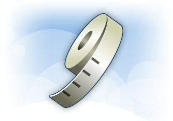

Länsförsäkringars hälsotjänster är utvecklat av SOS International AB


Att vara lite rund över stuss och lår är inte farligt, men om magen växer behöver du se upp.
Bukfetman har visat sig ha mest negativ inverkan på kroppen och hälsan, ett ökat stussomfång verkar vara en skyddande faktor.
Det är skillnad på fett och fett. Börjar buk-omfånget öka så samlas vanligtvis fett runt organen inne i kroppen. Till stor del beror den ökade risken på att fria fettsyror far runt i kroppen utan att förbrännas. Detta kopplas sedan till en rad metabola sjukdomar som diabetes, hjärt-kärlsjukdomar samt en ökad risk för blodproppar.
Hur kan man då komma till rätta med sin vikt? Det kräver att man bestämmer sig och är uthållig. Med rätt kosthållning och fysisk aktivitet så går det att förändra.
Länsförsäkringars hälsotjänster är utvecklat av SOS International AB